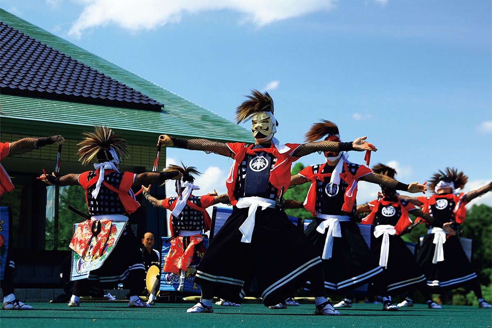
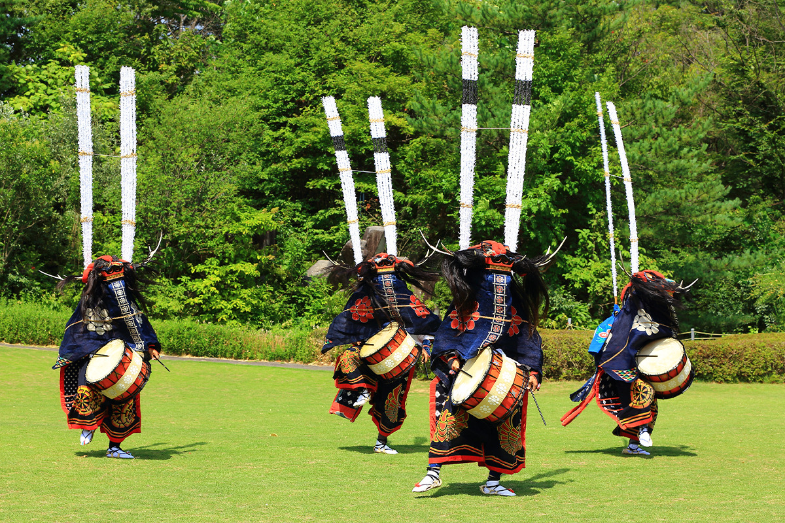
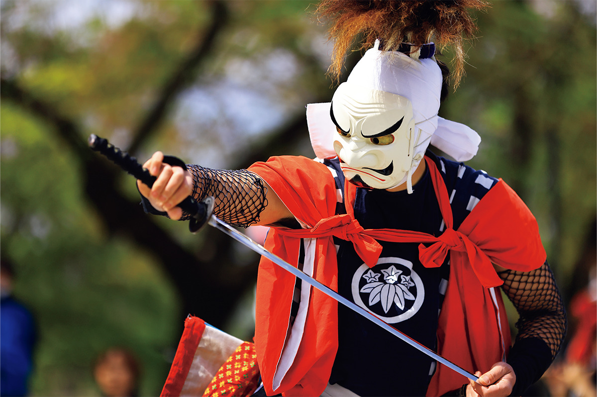

Префектура Иватэ · Китаками · праздник
«Китаками митиноку гэйно мацури»: больше ста народных представлений Тохоку за три августовских дня

Город Китаками в префектуре Иватэ называют сокровищницей народных представлений. Каждый август больше ста коллективов собираются у вокзала, чтобы показать танцы и обряды, которые в окрестных деревнях передают из поколения в поколение.
Праздник
Сто коллективов на одной площади
Китаками в префектуре Иватэ богат народными представлениями, и в каждой округе они свои. «Китаками митиноку гэйно мацури» собирает их вместе: здесь выступают коллективы, которые хранят эти традиции в Китаками и окрестностях. В 2025 году праздник прошёл в 64-й раз.
Программа огромная, больше 100 номеров. Есть оникэнбай, танец с мечами в масках демонов-они, которых здесь считают воплощением Будды. Есть сисиодори, «танец оленя», и в каждой деревне он выглядит по-своему. Есть священные танцы кагура, «танец тигра» торамаи и таууэодори, танцы посадки риса. Эти представления родились очень давно, но их эффектность не устарела.

В первый день по улицам идут жители города: они танцуют «Китаками одэнсэ» и местный вариант танца санса-одори. На третий день по реке пускают плавучие фонари, а вечер заканчивается фейерверком.
Финал
Оникэнбай у костров
Главное событие праздника, по словам писателя, который пишет о японских праздниках и традиционных искусствах, это ночной «большой групповой оникэнбай». Его танцуют сразу несколько коллективов на площади перед вокзалом Китаками, и за вечер показывают два номера.
Выступление идёт при свете костров. Огонь выхватывает из темноты суровые маски и резкие движения танцоров, и от этого танец кажется ещё мощнее.

Музей
«Они-но яката»: музей, посвящённый демонам
Раз уж вы приехали в Китаками, стоит заглянуть и в городской музей «Они-но яката», целиком посвящённый демонам-они. Здесь собраны рассказы об они со всей Японии, есть экспозиция о манге «Гэгэгэ-но Китаро». В музее регулярно показывают оникэнбай, кагуру и другие народные представления, так что увидеть их можно и не в дни праздника.
В 2026 году праздник проходил с 7 по 9 августа, в 65-й раз. Весной в Китаками стоит приехать ради другого зрелища: сакуры в парке Тэнсёти.
«Китаками митиноку гэйно мацури»
- Даты
- 7–9 августа 2026 года
- Адрес
- префектура Иватэ, Китаками, площадь «Омацури хироба» (улица у вокзала) и другие места
- Как добраться
- около 1 минуты пешком от станции JR Китаками; на машине около 10 минут от развязки Китаками-Эдзурико скоростной дороги Тохоку
Музей «Они-но яката»
- Адрес
- префектура Иватэ, Китаками, Вага-тё, Ивасаки, 16-131